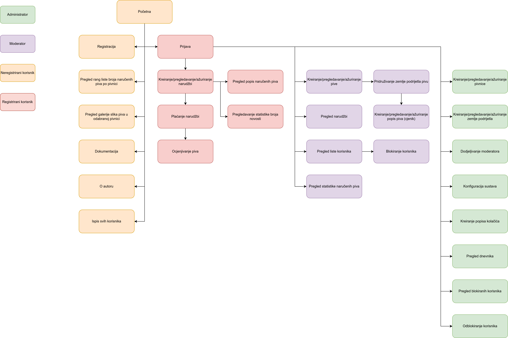
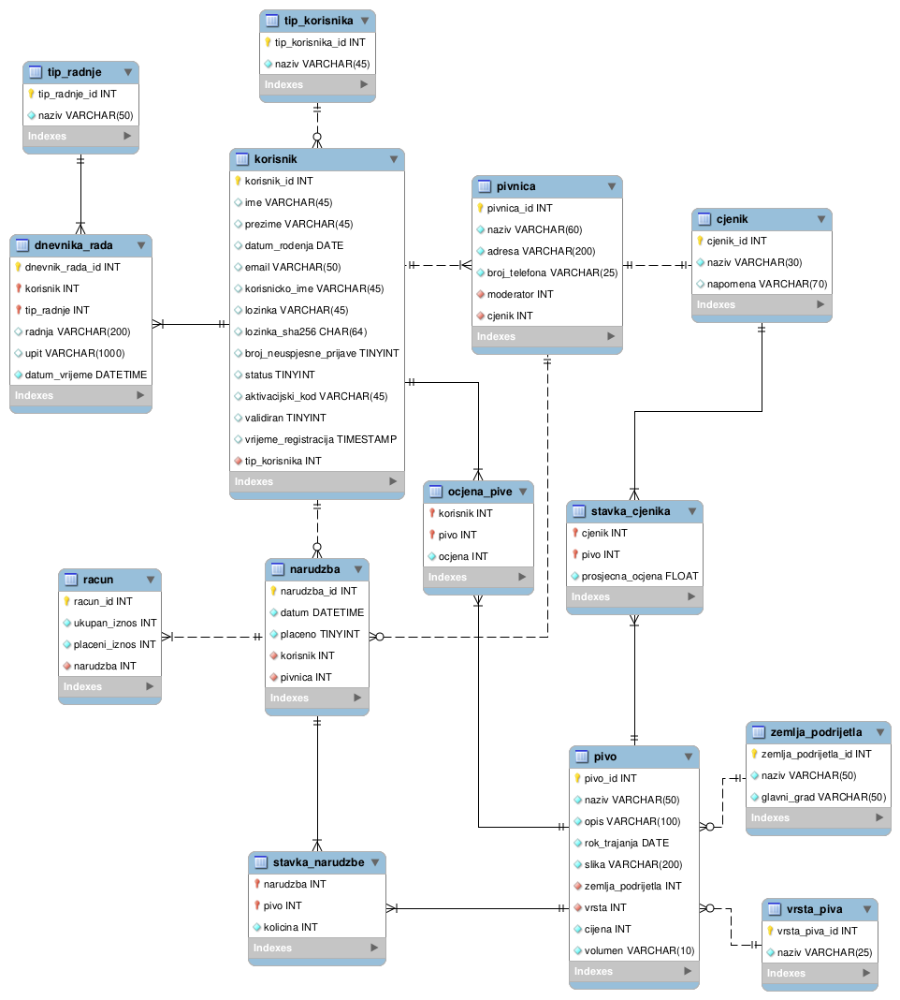

DOKUMENTACIJA
Opis projektnog zadatka:
Tema projektnog zadatka bila je "Pivnica". Zadatak je bio izraditi web stranica koja omogućava se funkcionalnosti koje su potrebne
kako bi se omogućio rad pivnice. Također, postoje četiri uloge korisnika koje se pojavljuju u projektnom zadatku, a to su administrator,
moderator, registrirani korisnik te neregistrirani korisnik. Neke od funkcionalnosti koje omogućava web stranica su kreiranje pivnica te
dodjeljivanje moderatora pojedinoj pivnici, kreiranje piva te dodjeljivanje zemlje podrijetla i vrste pojedinoj pivi, kreiranje narudžbi,
računa, ocjenjivanje pive i slično. Također, administrator ima mogućnost uvida svih podataka i aktivnosti korisnika. Korisnici se mogu
prijaviti i registrirati.
Opis projektnog rješenja:
Neregistrirani korisnik je korisnik koji ima najmanje mogućnosti unutar web stranice. Njemu je prikazana početna stranica, prijava,
registracija, galerija, rang lista, informacije o autoru te dokumentacija. Registrirani korisnik ima sve mogućnosti kao i neregistrirani
korisnik uz određene dodatke. Registrirani korisnik može pregledati vlastite narudžbe, platiti narudžbe te vidjeti popis piva koje je naručio
i ocijeniti ona piva koja se nalaze u narudžbama koje su plaćene u cjelosti. Za kraj, korisnik ima mogućnost odjave. Moderator ima sve
mogućnosti koje su navedene u prethodnim ulogama uz dodatak kreiranja, pregleda i ažuriranja piva pridruživanja zemlji podrijetla u pivnicama
za koje je zadužen. Zatim može kreirati i pregledati stavke pojedinih cjenika u pivnicama. Pregledava sve narudžbe korisnika te pregledava
korisnike koji imaju neplaćene narudžbe te iz može blokirati. Administrator ima sve mogućnosti kao i sve tri prethodne uloge te još može
kreirati, pregledati i ažurirati pivnice, dodijeliti moderatore pivnici. Osim toga može kreirati, pregledati i ažurirati zemlje podrijetla.
Administrator može blokirati ili odblokirati željenog korisnika te ima mogućnost pregleda svih aktivnosti unutar stranice.
Navigacijski dijagram:

ERA dijagram:

Popis i opis skripata, mapa od kojih se sastoji projekt:
- prijava.php: prijava korisnika na stranicu
- registracija.php: registracija korisnika na stranicu
- validiraj.php: validacija email adrese novoregistriranog korisnika
- .htaccess: datoteka u kojoj se nalazi korisnik s istim korisničkim imenom i lozinkom kao i pristup
do baze podataka
- .htpasswd: datoteka u kojoj se nalazi generirana lozinka
- korisnici.php: ispis svih korisnika
- baza.class.php: klasa baza koja služi za spajanje na bazu, izvršavanje upita i odspajanje od baze
- blokirani_korisnici.php: administrator ima mogućnost blokiranja i odblokiranja korisnika
- dnevnik.class.php: klasa dnevnik koja služi za praćenje aktivnosti korisnika te upisivanje tih aktivnosti u bazu
- dnevnik_rada.php: administrator ima mogućnost uvida u sve aktivnosti svih korisnika na stranici
- dokumentacija.html: pregled informacija o projektu
- galerija.php: galerija slika piva u odabranoj pivnici uz mogućnost sortiranja po zemlji podrijetla ili cijeni te
mogućnost filtriranja po ocjeni
- index.php: početna stranica
- narudzbe.php: pregled svih narudžbi korisnika s ukupnim iznosom računa i plaćenog iznosa računa;
posebno su označene one narudžbe koje nisu plaćene u potpunosti
- neplacene_narudzbe.php: lista korisnika koji imaju neplaćene narudžbe s informacijom ukupnog iznosa kojeg
korisnik mora platiti; mogućnost blokiranja korisnika
- o_autoru.html: informacije o autoru stranice
- pive.php: kreiranje, pregledavanje i ažuriranje piva te pridruživanje zemlji podrijetla u pivnicama za koje
je moderator zadužen
- pivnice.php: kreiranje, pregledavanje i ažuriranje pivnica te dodjeljivanje moderatora pivnici
- placanje_narudzbi.php: mogućnost plaćanja narudžbi; kada korisnik plati sve narudžbe automatski se deblokira
ukoliko je bio blokiran
- popis_narucenih_piva.php: popis piva korisnika koje je naručio i ako je pivo u narudžbi koja je plaćena
u potpunosti može dati svoju ocjenu od 1 do 5
- pregled_narudzbi.php: pregled narudžba korisnika
- rang_lista.php: rang lista broja naručenih piva po pivnici u vremenskom periodu (od-do)
- sesija.class.php: klasa sesija koja služi za pokretanje sesije te zatvaranje sesije
- stavke_cjenika.php: kreiranje i pregledavanje popisa piva koje se mogu naručivati (cjenik) za pivnice u kojima
je zadužen na način da odabere piva koje je prethodno dodao; automatski kada se doda piva je prosječna ocjena pive
jednaka 0
- zaglavlje.php: uključivanje klasa baza, sesija i dnevnik, kreiranje sesije te sadrži funkciju za odjavu korisnika
- zemljePodrijetla.php: kreiranje, pregledavanje te ažuriranje zemlje podrijetla
- mapa css:
- sadrži css datoteku mforjan.css
- mapa izvorne datoteke:
- sadrži datoteku mforjan_mysqlworkbench_sql.sql koja sadrži skriptu izvezenu iz alata MySQL Workbench,
mforjan_workbench.mwb, mforjan_workbench.mwb.bak te navigacijski.xml
- mapa javascript:
- sadrži datoteku mforjan.js u kojoj se nalaze validacije na strani klijenta prilikom registracije
- mapa materijali:
- sadrži sve slike koje se koriste na stranici
- mapa obrasci:
- sadrži datoteke prijava.php, registracija.php, validiraj.php
- mapa privatno:
- sadrži datoteke .htaccess, .htpasswd, korisnici.php
Popis i opis korištenih tehnologija i alata:
- Javascript: validacija na strani klijenta
- PHP: rad s bazom te provjera zahtjeva POST metodama
- Netbeans IDE: alat u kojem je izrađen ovaj projekt
- Filezilla: alat za prijenos datoteka na server
- MySQL Workbench: alat u kojem se modelirala baza podataka
- phpMyAdmin unos podataka u tablice, izrađivanje SQL upita
- Terminal: web server pomoću kojeg je testirano programsko rješenje
Popis i opis korištenih vanjskih izvora:
- Google reCAPTCHA: zaštita od automata